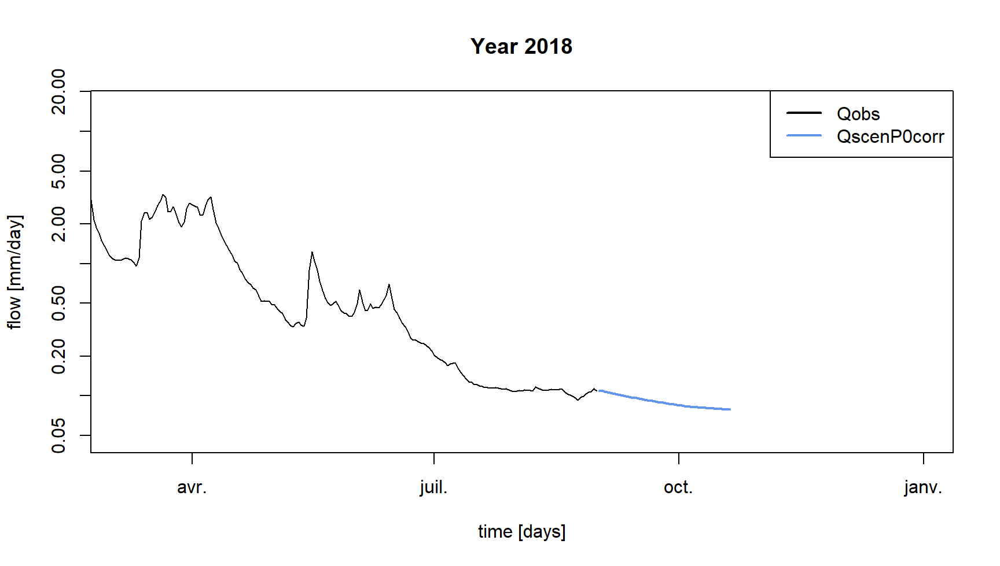

Prévision de bas débits
Pierre Brigode & Olivier Delaigue
1 Énoncé
1.1 Contexte
Fin de l’été 2018, la La Meuse à Saint-Mihiel a atteint son niveau le plus bas depuis plusieurs années et les précipitations se font toujours attendre sur ce bassin versant caractérisé par de nombreux usages de l’eau en cette période estivale. En charge de la surveillance des débits en période d’étiage, vous venez d’être appelé.e par les élus du Syndicat intercommunal qui s’affolent de la situation de sécheresse et vous demandent de produire une estimation des débits de la rivière pour les prochaines semaines.
Malheureusement, vous ne recevez plus les prévisions météorologiques du service de prévision de la région depuis plusieurs semaines… Vous ne disposez donc d’aucune prévision des précipitations à venir, mais devez tout de même quantifier les débits possibles sur les prochaines semaines sur le bassin versant.
L’exercice consiste donc à utiliser les données hydro-climatiques disponibles (au pas de temps journalier) sur le bassin versant La Meuse à Saint-Mihiel (2543 km²), et un modèle pluie-débit pour prévoir les débits des semaines à venir en utilisant (1) le dernier débit observé sur le bassin versant considéré, (2) l’historique des précipitations observées et (3) l’historique des débits observés. Ces informations permettront d’obtenir des fourchettes de débits potentiels pour les semaines à venir (cf. figure suivante).
Ce travail sera réalisé en quatre étapes :
- Analyse statistique de la climatologie des débits pour avoir un ordre de grandeur des débits historiquement observés durant la période d’étude, i.e. le régime des débits journaliers.
- Calage du modèle hydrologique sur la période historique en considérant un critère centré sur les bas débits.
- Scénario pessimiste de précipitations nulles : simulation pluie-débit sur l’été étudié à partir du dernier débit observé en ne considérant aucune précipitation à venir et une série d’évapotranspiration potentielle (ETP) constituée à partir des ETP moyennes interannuelles.
- Scénarios de précipitations futures non nulles : simulations pluie-débit sur l’été étudié à partir du dernier débit observé en “rejouant” la climatologie des précipitations, i.e. les précipitations observées durant les autres étés. Il y aura donc autant de simulations à faire que d’années historiques passées.

1.2 Consignes
Cette section vise à expliciter certaines tâches attendues et à décrire les conditions de calage et de simulation du modèle hydrologique (période de calage des paramètres, périodes d’initialisation des réservoirs, critère de calage, etc.).
1.2.1 Analyse de la climatologie des débits
Dans un contexte de prévision hydrologique, la “climatologie des débits” désigne le régime des débits, i.e. la série de débits moyens interannuels. Si l’on veut prévoir le débit du jour à venir (par exemple le 1 septembre), la prévision la plus “simple” d’un point de vue technique consiste en effet à calculer la moyenne des débits observés en ce même jour lors des années passées (donc l’ensemble des débits observés les 1er septembre des années passées). Cette moyenne peut également être encadrée grâce aux calculs de quantiles de ces mêmes débits historiques (par exemple les quantiles 10 et 90 %), ce qui permet d’avoir une première estimation “probabiliste” des débits futurs, sans réaliser de modélisation pluie-débit et sans utiliser de prévision de précipitations.
Dans cet exercice, il s’agit d’analyser l’ensemble des débits observés sur la période de prévision ( 1 septembre 2018 au 20 octobre 2018) lors des années précédentes. 20 années sont disponibles pour cette analyse, ce qui permet de constituer 20 séries de débits journaliers historiques pour la période de prévision. Une fois regroupés dans un même tableau, ces débits peuvent être résumés grâce au calcul, pour chaque journée considérée, de quantiles tels que les quantiles 10, 25, 50, 75 et 90 %. Ces quantiles seront ensuite utilisés comme première estimation des débits futurs.
1.2.2 Modèle pluie-débit
Vous utiliserez le modèle GR6J (Pushpalatha et al. 2011). Il s’agit d’un modèle pluie-débit global, fonctionnant au pas de temps journalier et possédant six paramètres. Il nécessite en entrée des séries temporelles continues de précipitations et d’évapotranspirations potentielles (ETP) journalières.
Ce modèle est utilisable facilement grâce au package airGRteaching (Delaigue et al. 2024, 2023), développé pour le logiciel R par l’équipe Hydrologie des bassins versants de l’unité de recherche HYCAR (INRAE, France).
Les séries temporelles de précipitations, d’ETP et de débits peuvent
être facilement mises en forme grâce à la fonction
PrepGR(). On peut réaliser une simulation pluie-débit grâce
à la fonction SimGR() et un calage des paramètres grâce à
la fonction CalGR().
1.2.3 Période de calage (et d’initialisation)
L’initialisation est particulièrement importante dans un contexte de prévision hydrologique par modélisation : cette initialisation consiste ainsi à estimer l’état de saturation du bassin (i.e. les états internes du modèle) qui va ensuite être utilisé comme conditions initiales pour tous les scénarios testés. Ces scénarios partent donc tous d’un même état à la date de lancement des prévisions.
La période à considérer pour caler les paramètres du modèle sur le bassin versant de la La Meuse à Saint-Mihiel débute le 1 septembre 2000 et s’achève le 31 août 2018. Une période d’initialisation de 20 mois doit également être considérée du 1 janvier 1999 au 31 août 2000.
1.2.4 Critère de calage
Le critère de calage considéré dans cet exercice est le critère de Nash et Sutcliffe (Nash and Sutcliffe 1970) calculé sur les logarithmes népériens des débits, noté \(NSE\) par la suite (cf. équation suivante). Ce critère est largement utilisé en modélisation hydrologique.
Le critère NSE, borné entre \(-\infty\) et \(1\), permet de quantifier la performance d’un modèle de manière relative, en comparant une série de débits simulés avec un modèle dit “naïf”, ici la moyenne des débits observés (i.e. une série de débits constituée en chaque pas de temps par la moyenne des débits observés). Ainsi, une valeur de NSE égale à 1 signifie une concordance parfaite entre les séries de débits observés et simulés (ce qui n’est jamais le cas), alors qu’une valeur de NSE inférieure à 0 signifie que la simulation considérée est moins performante que la simulation du modèle “naïf”. Le calcul de \(NSE_{ln}\) est détaillé dans l’équation suivante, dans laquelle \(Q_{obs,t}\) est le débit observé au pas de temps \(t\), \(Q_{sim,t}\) est le débit simulé au pas de temps \(t\), \(\overline{Q_{obs}}\) est la moyenne des débits observés, \(\epsilon\) est une constante définie ci-après, et \(n\) est le nombre d’observations :
\[\begin{equation} NSE_{ln} = 1-\frac{\sum_{t=1}^{n}(ln(Q_{obs,t}+\epsilon)-ln(Q_{sim,t}+\epsilon))^{2}}{\sum_{t=1}^{n}(ln(Q_{obs,t}+\epsilon)-\overline{ln(Q_{obs}+\epsilon)})^{2}} \end{equation}\]
Le calcul de la valeur d’\(\epsilon\) est détaillé dans l’équation suivante. L’ajout de cet \(\epsilon\) est nécessaire lorsque des débits nuls sont présents dans la série de débits observés.
\[\begin{equation} \epsilon=\frac{\overline{Q_{obs}}}{100} \end{equation}\]
La transformation logarithmique permet de mettre plus de poids sur les débits les plus faibles et donc de limiter les erreurs commises sur la simulation des étiages (Ludovic Oudin et al. 2006). Considérer une série constituée par l’inverse des débits lors du calage est également recommandé pour obtenir de bonnes performances lors de la simulation des très bas débits (Pushpalatha et al. 2012).
Les différents éléments nécessaires pour le calcul du critère de
calage doivent être renseignés en argument de la fonction
CalGR(), ce qui permet notamment de spécifier si le critère
doit être calculé sur des débits “transformés” avec l’argument
transfo (ici égal à log).
1.2.5 Calage automatique des paramètres du modèle
L’estimation automatique de paramètres vise à utiliser un algorithme automatique qui va générer automatiquement des jeux de paramètres, les tester, et en générer d’autres en fonction des performances de ceux d’ores et déjà testés. L’algorithme développé par Michel (1991) sera utilisé dans cet exercice.
1.2.6 Période de simulation
La période de simulation, qui peut également être appelée période de prévision dans cet exercice, s’étale du 1 septembre 2018 au 20 octobre 2018. L’ensemble des pas de temps précédant cette période de calage peut être utilisé comme période d’initialisation.
1.2.7 Scénario pessimiste de précipitations nulles
Avoir un modèle pluie-débit calé sur le bassin versant étudié permet d’utiliser des scénarios de précipitations futures et de les transformer en scénarios de débits. Le scénario le plus simple à tester (et le plus pessimiste) est le scénario dit de “précipitations nulles” : aucune précipitation ne sera observée sur les pas de temps de la période de prévision. Il s’agira ainsi de la borne basse de la prévision par modélisation pluie-débit.
Pour mettre en place ce scénario dans l’environnement d’airGRteaching, il faut créer un tableau de données fictives contenant une série temporelle de précipitations égales à 0 sur l’étendue de la période de prévision. Pour l’ETP, une hypothèse réaliste est d’utiliser le régime interannuel de cette variable. Ainsi, pour chaque journée de prévision, la valeur moyenne interannuelle des ETP observées sera utilisée : l’ETP du 1 septembre de ce scénario sera égal à la moyenne des valeurs d’ETP observées pour l’ensemble des 1 septembre.
1.2.8 Scénario de précipitations futures non nulles
Cette dernière étape vise à réaliser plusieurs simulations pluie-débit en considérant des scénarios de précipitations futures non nulles. Ces scénarios de précipitations seront construits à partir de l’historique des précipitations. 20 années passées sont disponibles pour cette analyse, ce qui permet de constituer 20 séries de précipitations et d’ETP journalières historiques pour la période de prévision. Une simulation pluie-débit sera réalisée pour chacune de ces années passées, en débutant la simulation par la même période d’initialisation. Une fois regroupés dans un même tableau, les débits simulés pourront être résumés grâce au calcul, pour chaque journée considérée, de quantiles tels que les quantiles 10, 25, 50, 75 et 90 %. Ces quantiles seront ensuite utilisés comme indication des possibles débits futurs.
1.3 Données disponibles
Les données disponibles pour la modélisation pluie-débit sont les suivantes :
- une chronique journalière de précipitations totales (liquides +
solides) [mm/jour] (
Ptot); - une chronique journalière d’ETP calculée grâce à la formule d’L. Oudin et al. (2005, mm/jour)
(
Evap); - une chronique journalière de débits exprimés en lame d’eau [mm/jour]
(
Qmmd).
2 Éléments de correction
2.1 Chargement et mise en forme des données
Les lignes de codes présentées ci-après permettent de lire les données nécessaires au calage du modèle pluie-débit et de définir les périodes temporelles de travail (période d’initialisation, période de calage et période de prévision) :
# Calibration period
per_cal_hist <- c("2000-09-01", "2018-08-31")
# Forecasting period
per_fcst <- c("2018-09-01", "2018-10-20")
# Warm-up period to simulate on the historical period
per_wup_hist <- c("1999-01-01", "2000-08-31")
# Warm-up period to simulate on the forcasting period
per_wup_fcst <- c(per_wup_hist[1], per_cal_hist[2])
# Forecasting dates
dates_fcst <- seq(from = as.POSIXct(per_fcst[1], tz = "UTC", format = "%Y-%m-%d"),
to = as.POSIXct(per_fcst[2], tz = "UTC", format = "%Y-%m-%d"),
by = "1 day")
head(dates_fcst)## [1] "2018-09-01 UTC" "2018-09-02 UTC" "2018-09-03 UTC" "2018-09-04 UTC" "2018-09-05 UTC" "2018-09-06 UTC"# Formatting of forecast dates (Month-Day)
month_day_fcst <- format(dates_fcst, "%m-%d")
head(month_day_fcst)## [1] "09-01" "09-02" "09-03" "09-04" "09-05" "09-06"2.1.1 Initial time series
# Catchment data loading
library(airGRdatasets)
data("B222001001", package = "airGRdatasets")
# Catchment area
area <- B222001001$Meta$Area
# Observed daily time series
ts_init <- B222001001$TS
# Add date information to the time series
ts_init$Year <- format(ts_init$Date, format = "%Y")
ts_init$MonthDay <- format(ts_init$Date, format = "%m-%d")
# Display of the 1st time steps of the time series
head(ts_init)## Date Ptot Temp Evap Qls Qmmd Year MonthDay
## 14764 1999-01-01 0.1 3.0 0.3 33100 1.124 1999 01-01
## 14765 1999-01-02 5.8 5.5 0.4 31400 1.067 1999 01-02
## 14766 1999-01-03 5.3 5.6 0.4 30700 1.043 1999 01-03
## 14767 1999-01-04 1.2 9.1 0.5 32200 1.094 1999 01-04
## 14768 1999-01-05 0.0 9.1 0.5 41600 1.413 1999 01-05
## 14769 1999-01-06 0.1 7.2 0.5 44100 1.498 1999 01-062.1.2 Ploted time series
# Set values of the last winter to missing data
ts_plot <- ts_init
isd_wint <- ts_plot$Date >= as.POSIXct(per_fcst[1], tz = "UTC", format = "%Y-%m-%d")
ts_plot[isd_wint, c("Ptot", "Temp", "Evap", "Qls", "Qmmd")] <- NA
# Display of the last time steps of the time series
tail(ts_plot)## Date Ptot Temp Evap Qls Qmmd Year MonthDay
## 22063 2018-12-26 NA NA NA NA NA 2018 12-26
## 22064 2018-12-27 NA NA NA NA NA 2018 12-27
## 22065 2018-12-28 NA NA NA NA NA 2018 12-28
## 22066 2018-12-29 NA NA NA NA NA 2018 12-29
## 22067 2018-12-30 NA NA NA NA NA 2018 12-30
## 22068 2018-12-31 NA NA NA NA NA 2018 12-312.1.3 Observed time series
# Select the time series over the observed period (no "future" dates)
ts_hist <- ts_plot[ts_plot$Date < dates_fcst[1], ]
# Display of the last time steps of the time series
tail(ts_hist)## Date Ptot Temp Evap Qls Qmmd Year MonthDay
## 21941 2018-08-26 0.1 13.4 2.5 2910 0.099 2018 08-26
## 21942 2018-08-27 0.6 16.5 2.9 3040 0.103 2018 08-27
## 21943 2018-08-28 0.0 18.3 3.1 3140 0.107 2018 08-28
## 21944 2018-08-29 14.6 17.1 2.9 3170 0.108 2018 08-29
## 21945 2018-08-30 0.7 15.1 2.6 3330 0.113 2018 08-30
## 21946 2018-08-31 0.7 13.8 2.4 3220 0.109 2018 08-312.1.4 Forecast time series
# Select the time series after the observed period (only "future" dates)
ts_fcst <- ts_plot[ts_plot$Date >= dates_fcst[1] & ts_plot$Date <= dates_fcst[length(dates_fcst)], ]
# Display of the 1st time steps of the time series
head(ts_fcst)## Date Ptot Temp Evap Qls Qmmd Year MonthDay
## 21947 2018-09-01 NA NA NA NA NA 2018 09-01
## 21948 2018-09-02 NA NA NA NA NA 2018 09-02
## 21949 2018-09-03 NA NA NA NA NA 2018 09-03
## 21950 2018-09-04 NA NA NA NA NA 2018 09-04
## 21951 2018-09-05 NA NA NA NA NA 2018 09-05
## 21952 2018-09-06 NA NA NA NA NA 2018 09-062.2 Analyse de la climatologie des débits
Les lignes de codes présentées ci-après permettent d’analyser la climatologie des débits en calculant les quantiles de débits interannuels sur la période de prévision :
# Calculation of the historical streamflow quantiles
ts_qclim_quant <- aggregate(Qmmd ~ MonthDay,
data = ts_hist[ts_hist$MonthDay %in% month_day_fcst, ],
FUN = function(x) {
quantile(x, probs = c(0.10, 0.25, 0.50, 0.75, 0.90))
})
ts_qclim_quant <- as.data.frame(ts_qclim_quant$Qmmd)
colnames(ts_qclim_quant) <- paste0("Q", gsub("\\D", "", colnames(ts_qclim_quant)))
rownames(ts_qclim_quant) <- month_day_fcst
# Display of the 1st calculated quantiles
head(ts_qclim_quant)## Q10 Q25 Q50 Q75 Q90
## 09-01 0.0736 0.0965 0.120 0.1925 0.2930
## 09-02 0.0786 0.0990 0.118 0.1850 0.2888
## 09-03 0.0790 0.0985 0.114 0.1770 0.2900
## 09-04 0.0806 0.0955 0.110 0.1925 0.3016
## 09-05 0.0762 0.0905 0.109 0.1885 0.3138
## 09-06 0.0748 0.0870 0.107 0.2000 0.3154La climatologie des débits permet d’obtenir un premier ordre de grandeur des débits possibles des prochains jours (cf. figure suivante), mais ne permet pas de rendre compte des derniers débits observés.
2.3 Préparation des données pour GR6J
Les lignes de codes présentées ci-après visent à préparer les données
disponibles pour leur utilisation par GR6J, grâce à la fonction
PrepGR() du package
airGRteaching.
# Adding an epsilon to observed streamflows for criterion calculation
epsilon_qobs <- mean(ts_hist$Qmmd, na.rm = TRUE) / 100
# Data processing for GR6J
prep_hist <- PrepGR(DatesR = ts_hist$Date,
Precip = ts_hist$Ptot,
PotEvap = ts_hist$Evap,
Qobs = ts_hist$Qmmd + epsilon_qobs,
HydroModel = "GR6J",
CemaNeige = FALSE)2.4 Calage de GR6J sur la période historique
Les lignes de codes présentées ci-après permettent de caler le modèle GR6J sur la période historique.
# Calibration step
cal_hist <- CalGR(PrepGR = prep_hist,
CalCrit = "NSE",
WupPer = per_wup_hist,
CalPer = per_cal_hist,
transfo = "log",
verbose = TRUE)## Grid-Screening in progress (0% 20% 40% 60% 80% 100%)
## Screening completed (729 runs)
## Param = 49.402, -0.521, 148.413, 2.345, 0.020, 20.086
## Crit. NSE[log(Q)] = 0.9176
## Steepest-descent local search in progress
## Calibration completed (58 iterations, 1427 runs)
## Param = 195.102, -0.374, 27.227, 4.470, 0.291, 9.093
## Crit. NSE[log(Q)] = 0.9638# Get parameter and criterion values
param_cal_hist <- GetParam(cal_hist)
crit_cal_hist <- GetCrit(cal_hist)
# Graphical assessment of the calibration performance
plot(cal_hist)Les six paramètres et la valeur du critère de calage (\(NSE_{ln}\)) obtenus après la procédure de calage automatique sont :
- X1 = 195 [mm]
- X2 = -0.374 [mm/j]
- X3 = 27 [mm]
- X4 = 4.47 [j]
- X5 = 0.291 [-]
- X6 = 9.09 [mm]
- \(NSE_{ln}\) = 0.964 [-]
Les performances obtenues en calage sont très bonnes, puisque le critère \(NSE_{ln}\) est égal à 0.964.
Les lignes de codes présentées ci-après permettent de stocker dans un même tableau les débits observés et les débits simulés avec le jeu de paramètres obtenu par calage automatique, afin de les comparer.
# Combination of observed and simulated streamflow time series on the calibration period
ts_cal_hist <- as.data.frame(cal_hist)
head(ts_cal_hist)## Dates PotEvap PrecipObs PrecipFracSolid_CemaNeige TempMeanSim_CemaNeige Qobs Qsim
## 1 2000-09-01 2.6 6.6 NA NA 0.270145 0.2240305
## 2 2000-09-02 2.2 13.8 NA NA 0.275145 0.2211849
## 3 2000-09-03 2.2 3.2 NA NA 0.280145 0.2265360
## 4 2000-09-04 2.0 0.2 NA NA 0.297145 0.2440921
## 5 2000-09-05 2.0 0.0 NA NA 0.318145 0.2887186
## 6 2000-09-06 2.2 8.2 NA NA 0.363145 0.3087389La figure suivante représente les séries de débits observés et simulés sur la fin de la période de calage.

2.5 Scénario pessimiste de précipitations nulles
Les lignes de codes présentées ci-après permettent de créer une chronique de données “fictives” regroupant des données observées (pour l’initialisation du modèle) et des données créées pour le scénario de “précipitations nulles”. Cette chonique sera ensuite utilisé en entrée du modèle GR6J pour “transformer” ce scénario météorologique en scénario hydrologique.
# Duplicate the table with future dates to fill the forecast period
ts_fcst_p0 <- ts_fcst
# Setting zero precipitation for the forecast period
ts_fcst_p0$Ptot <- 0
# Addition of interannual average PE
ts_eclim <- aggregate(Evap ~ MonthDay,
data = ts_hist[ts_hist$MonthDay %in% month_day_fcst, ],
FUN = mean)
ts_fcst_p0$Evap <- ts_eclim$Evap
# Combine historical and forecasting time series
ts_scen_p0 <- rbind(ts_hist, ts_fcst_p0)
# Display of the last lines
tail(ts_scen_p0)## Date Ptot Temp Evap Qls Qmmd Year MonthDay
## 21991 2018-10-15 0 NA 1.0526316 NA NA 2018 10-15
## 21992 2018-10-16 0 NA 1.0473684 NA NA 2018 10-16
## 21993 2018-10-17 0 NA 1.0210526 NA NA 2018 10-17
## 21994 2018-10-18 0 NA 0.9736842 NA NA 2018 10-18
## 21995 2018-10-19 0 NA 0.9789474 NA NA 2018 10-19
## 21996 2018-10-20 0 NA 1.0526316 NA NA 2018 10-20Les lignes de codes présentées ci-après permettent de formater la chronique précédemment créée comme entrées du modèle GR6J et de réaliser une simulation pluie-débit.
# Data processing for GR6J
prep_scen_p0 <- PrepGR(DatesR = ts_scen_p0$Date,
Precip = ts_scen_p0$Ptot,
PotEvap = ts_scen_p0$Evap,
Qobs = NULL,
HydroModel = "GR6J",
CemaNeige = FALSE)
# Hydrological forecast
sim_scen_p0 <- SimGR(PrepGR = prep_scen_p0,
WupPer = per_wup_fcst,
SimPer = per_fcst,
Param = param_cal_hist,
verbose = FALSE)## Warning in SimGR(PrepGR = prep_scen_p0, WupPer = per_wup_fcst, SimPer = per_fcst, : "PrepGR" does not contain
## any Qobs values. The efficiency criterion is not computedLa figure suivante représente les séries de débits observés et simulés sur la fin de la période de calage, et le résultat de la simulation du scénario de “précipitations nulles”. On observe la lente décroissance des débits simulés, générée par la vidange lente des réservoirs de GR6J.
Il est important de noter que les simulations réalisées jusqu’à présent ne prennent pas en compte le dernier débit observé. Cela peut générer une discontinuité dans la séquence des débits, entre les observations disponibles jusqu’à l’instant de prévision, et les simulations produites à partir de cet instant. Cette erreur peut être corrigée de plusieurs manières, en “assimilant” le dernier débit observé. La correction la plus simple consiste à calculer un simple ratio entre le dernier débit observé et le débit simulé correspondant et à utiliser ce ratio pour corriger l’ensemble des débits simulés suivants. Les lignes de codes présentées ci-après permettent de calculer un tel ratio, qui sera utilisé par la suite pour corriger les débits simulés par GR6J, en les divisant par ce ratio (e.g. figure suivante).
# Correction (~ assimilation)
corr_qsim <- ts_sim_scen_p0$Qsim[1] / ts_hist$Qmmd[nrow(ts_hist)]
# Ratio display
corr_qsim## [1] 0.8250818
2.6 Scénarios de précipitations futures non nulles
Les lignes de codes ci-dessous permettent de faire des simulations pluie-débit sur l’été étudié à partir du dernier débit observé en “rejouant” la climatologie des précipitations, i.e. les précipitations observées durant les autres étés.
# Historical years
year_hist <- unique(ts_hist$Year)
year_hist <- setdiff(year_hist, unique(ts_fcst$Year))
year_hist## [1] "1999" "2000" "2001" "2002" "2003" "2004" "2005" "2006" "2007" "2008" "2009" "2010" "2011" "2012" "2013"
## [16] "2014" "2015" "2016" "2017"# Loop on the historical years
ts_qscen_year <- sapply(year_hist, FUN = function(i_year) {
i_ts_hist <- ts_hist[ts_hist$Year == i_year & ts_hist$MonthDay %in% month_day_fcst, ]
i_ts_hist$Date <- dates_fcst
# Combine historical and forecasting (based on precipitation climatology) time series
i_ts_scen_py <- rbind(ts_hist, i_ts_hist)
# Data processing for GR6J
prep_scen_py <- PrepGR(DatesR = i_ts_scen_py$Date,
Precip = i_ts_scen_py$Ptot,
PotEvap = i_ts_scen_py$Evap,
HydroModel = "GR6J",
CemaNeige = FALSE)
# Hydrological forecast
sim_scen_py <- SimGR(PrepGR = prep_scen_py,
WupPer = per_wup_fcst,
SimPer = per_fcst,
Param = param_cal_hist,
verbose = FALSE)
# Correction of the simulated streamflow
sim_scen_py$OutputsModel$Qsim / corr_qsim
})
# Compute future streamflow quantiles (based on precipitation climatology)
ts_qscen_quant <- t(apply(ts_qscen_year, MARGIN = 1, FUN = function(x) {
quantile(x, probs = c(0.10, 0.25, 0.50, 0.75, 0.90))
}))
ts_qscen_quant <- as.data.frame(ts_qscen_quant)
colnames(ts_qscen_quant) <- paste0("Q", gsub("\\D", "", colnames(ts_qscen_quant)))
rownames(ts_qscen_quant) <- month_day_fcst
# Display of the first calculated quantiles
head(ts_qscen_quant)## Q10 Q25 Q50 Q75 Q90
## 09-01 0.1090000 0.1090000 0.1090000 0.1090000 0.1090454
## 09-02 0.1095399 0.1095399 0.1095400 0.1095401 0.1112381
## 09-03 0.1077081 0.1077081 0.1077082 0.1078438 0.1095709
## 09-04 0.1065918 0.1065920 0.1065921 0.1071548 0.1099786
## 09-05 0.1055059 0.1055061 0.1055366 0.1069900 0.1132276
## 09-06 0.1044492 0.1044504 0.1046695 0.1082807 0.1156838La prévision de débits à partir de l’historique des précipitations semble indiquer que les prochains jours seront secs, et qu’une augmentation du débit de la La Meuse à Saint-Mihiel n’est a priori prévue que dans quelques jours.

La figure suivante permet de comparer tous les résultats sur un même graphique. Elle présente les débits observés et simulés sur la fin de la période de calage, la climatologie des débits sur la période de prévision, le résultat de la simulation du scénario de “précipitations nulles”, et les débits basés sur la climatologie des précipitations.